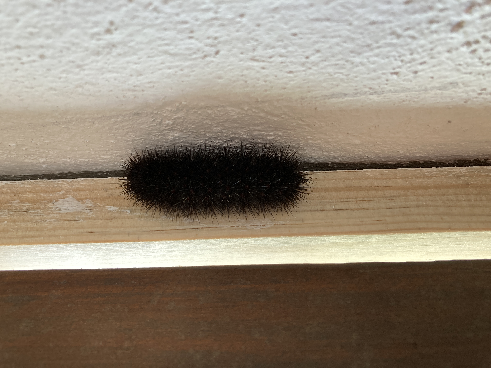
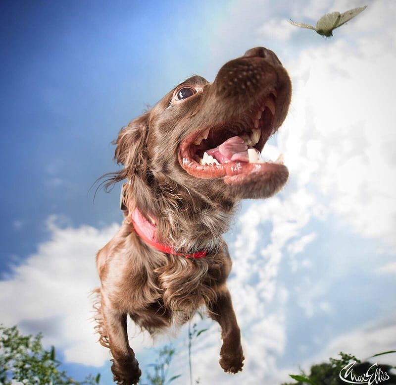
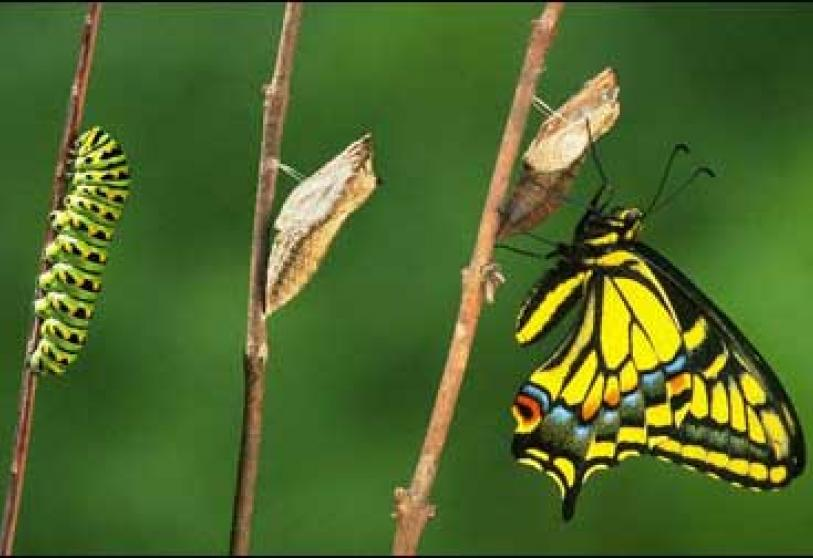
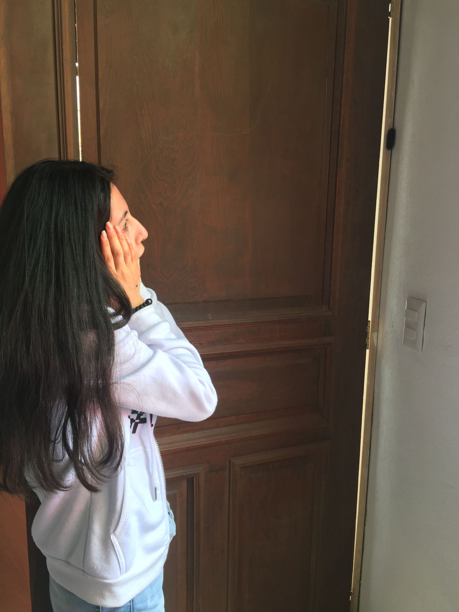

Había una vez una oruga peluda que era negra y peligrosa, decidió entrar al salón del Bootcamp para vigilar a Amanda.
Cuando Amanda se sintió observada grito fuertemente, y la pobre oruga se sintió triste porue solo quería ser su amiga, ella no tenia la culpa de ser peluda y peligrosa.
Transformación
Lo que no sabia Amanda, era que Caty, la oruga, se convertiria en una mariposa e intentaria ser su amiga nuevamente. Solo que esta vez, lo intentaria desde el aire.
La confrontación...
Despues de un tiempo, Caty crecio y se convirtio en una hermosa Monarca, y Amanda ya la quiso por que no le daba horror y no era fea. Siendo Amanda superficial le hizo una casita en su cuarto pero su perro la intento atrapar y lastimosamente....
Un giro inesperado
Le lastimó el ala derecha, sin embargo, Amanda llegó a tiempo para evitar que algo peor le ocurriera. Como pudo la alejó de su perro y cuidadosamente curó sus heridas, dandole los cuidados necesarios hasta que pudiera volar nuevamente por sí misma, pues el inverno ya se acercaba.